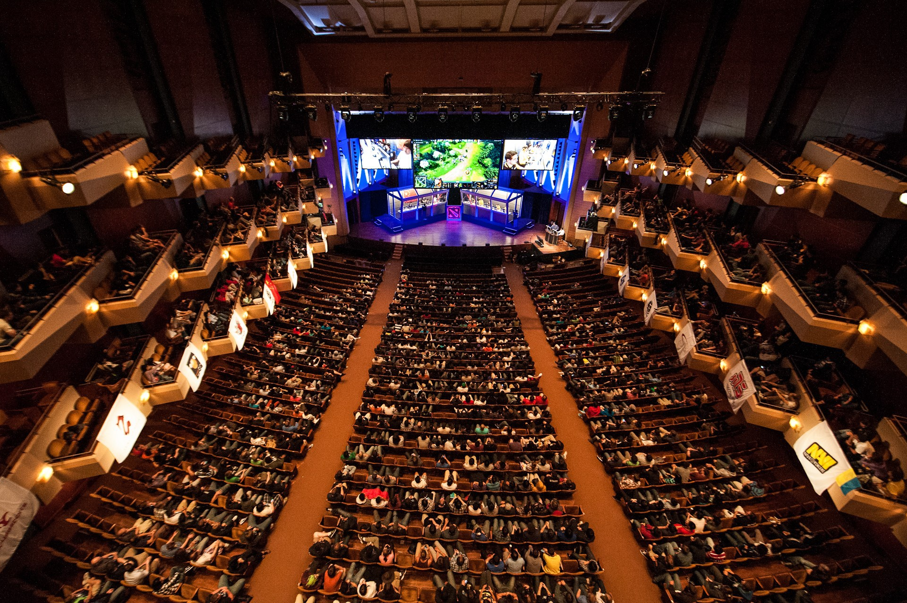
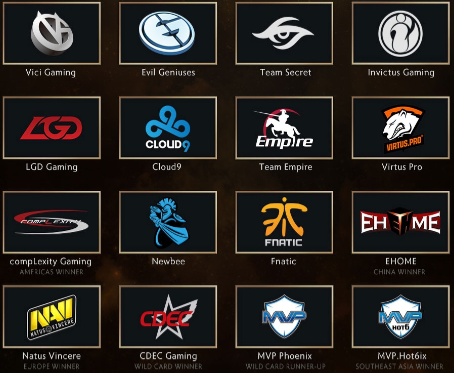

пятый турнир The International по игре Dota 2, проводимый компанией Valve, который проходил в Сиэтле с 3 по 8 августа 2015 года. Начальный призовой фонд составил 1 600 000 долларов США, а дополнительный сбор с билетов составил ещё 16 829 613 долларов США. Для освещения турнира были приглашены известные комментаторы, которые в том числе проводили прямые видео трансляции через сервис Twitch.tv
В турнире традиционно участвовали 16 команд. Приглашение на турнир получили 10 команд со всего мира. Ещё четыре места досталось победителям региональных отборочных турниров: американского, европейского, китайского и южноазиатского. Оставшиеся два места разыграли команды, занявшие вторые места на региональных квалификациях. На региональные квалификации прямые приглашения получали только 9 команд, десятый участник определялся путём прохождения открытых отборочных на турнир в своём регионе. В каждом регионе все команды сыграли по круговой системе в две группы. Четыре сильнейших команды продолжили борьбу в плей-офф квалификации, где первые места в каждой групппе оказались в верхней сетке, а вторые — в нижней.
